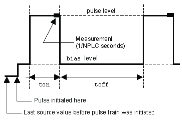

|
|
|
ConfigPulseVMeasureI()
This KIPulse factory script function configures a voltage pulse train with a current measurement at each point.
Type |
TSP-Link accessible |
Affected by |
Where saved |
Default value |
Function |
No |
|
|
|
Usage
f, msg = ConfigPulseVMeasureI(smu, bias, level, limit, ton, toff, points, buffer,
tag, sync_in, sync_out, sync_in_timeout, sync_in_abort)
f, msg = ConfigPulseVMeasureI(smu, bias, level, limit, ton, toff, points, buffer,
tag, sync_in, sync_out, sync_in_timeout)
f, msg = ConfigPulseVMeasureI(smu, bias, level, limit, ton, toff, points, buffer,
tag, sync_in, sync_out)
f, msg = ConfigPulseVMeasureI(smu, bias, level, limit, ton, toff, points, buffer,
tag, sync_in)
f, msg = ConfigPulseVMeasureI(smu, bias, level, limit, ton, toff, points, buffer,
tag)
f |
A Boolean flag; this flag will be |
msg |
A string message; if the f flag is |
smu |
System SourceMeter® instrument channel (set to |
bias |
Bias level in volts |
level |
Pulse level in volts |
limit |
Current limit (for example, compliance) in amperes |
ton |
Pulse on time in seconds |
toff |
Pulse off time in seconds |
points |
Number of pulse-measure cycles |
buffer |
Reading buffer where pulsed measurements will be stored; if this is |
tag |
Numeric identifier to be assigned to the defined pulse train |
sync_in |
Defines a digital I/O trigger input line; if programmed, the pulse train will wait for a trigger input before executing each pulse (this parameter is optional) |
sync_out |
Defines a digital I/O trigger output line; if programmed, the pulse train will generate a trigger output immediately before the start of |
sync_in_timeout |
Specifies the length of time (in seconds) to wait for input trigger; default value is 10 s |
sync_in_abort |
Specifies whether or not to abort pulse if input trigger is not received; if pulse aborts because of a missed trigger, a timer timeout message is returned; |
Details
Data for pulsed current measurements are stored in the reading buffer specified by the buffer input parameter.
Configures a voltage pulse train with a current measurement at each point. Measurements are made at the end of the ton time.
This function does not cause the specified smu to output a pulse train. It simply checks to see if all of the pulse dimensions are achievable, and if they are, assigns the indicated tag or index to the pulse train.The InitiatePulseTest(tag) function is used to initiate a pulse train assigned to a valid tag.

Example 1
ConfigPulseVMeasureI(smua, 0, 20, 1, 0.001, 0.080, 10, smua.nvbuffer1, 2) |
Set up a pulse train that uses System SourceMeter® instrument channel A. The pulse amplitude will be 20 V and will return to 0 V after 1 ms. The pulse will remain at 0 V for 80 ms, and the current limit will be 1 A during the pulse. The pulse train will consist of 10 pulses, and the pulse train will be assigned a tag index of 2. |
Example 2
local timelist = { 1, 2, 3, 4, 5 }
f, msg = ConfigPulseVMeasureI(smua, 0, 1, 100e-3, 1, timelist, 5, nil, 1) |
Variable off time between pulses in a pulse train. Configure a pulse with 1 second on-time and variable off-time, no measurement. |
Example 3
rbi = smua.makebuffer(10) rbv = smua.makebuffer(10) rbi.appendmode = 1 rbv.appendmode = 1 rbs = { i = rbi, v = rbv }
f, msg = ConfigPulseVMeasureI(smua, 0, 10, 1e-3, 1e-3, 1e-3, 2, rbs, 1) |
Simultaneous IV measurement during pulse. |
Also see
Copyright (c) 2007-2012, Keithley Instruments, Inc. All rights reserved.